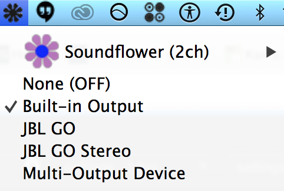

english
Как записать звук из браузера в Mac OS X
ru.wikihow.com/записать-звук-из-приложения-посредством-Soundflower
Не забудьте в шаге номер 5 поставить галочку в меню Soundflowerbed тут:

Как записать звук из браузера в Windows
http://remontka.pro/record-sound-computer/